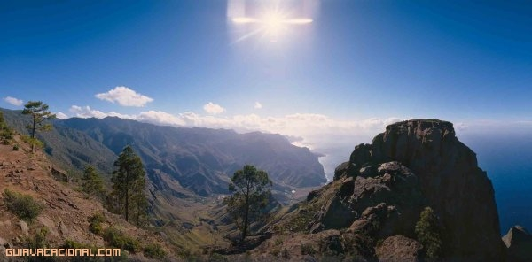

Camino del Fin del mundo
Itinerario que desde el Campamento de Tamadaba conduce a uno de los miradores naturales mas espectaculares y famosos de Tamadaba.
Acceso :El punto de partida del itinerario se halla en el aparcamiento de la Zona de Acampada y Campamento de Tamadaba a 0,9 Km. del cruce de carreteras próximo a la Casa Forestal (a 700 m). Si se prefiere partir caminando desde la misma Casa Forestal bajar ladera abajo en dirección norte hasta legar al aparcamiento (0,5 Km.).
Itinerario Caminar por las pistas que desde el edificio de servicios y aseos de la zona de Acampada llanea y baja suavemente direccion norte por el Llano de la Mimbre en ambiente de pinar despejado hasta llegar al borde del acantilado.  Se conoce como fin del Mundo no un punto concreto sino todo el borde acantilado de este llano, un prolongado mirador sobre Agaete y el Faneque cuyo disfrute requiere una cierta precaución. Regreso La vuelta al aparcamiento se puede efectuar directamente desandando el itinerario seguido o bordeando los acantilados por la derecha, oeste del llano, contemplando los acantilados del Faneque.
Tiempo estimado:2 horas y 21 minutos